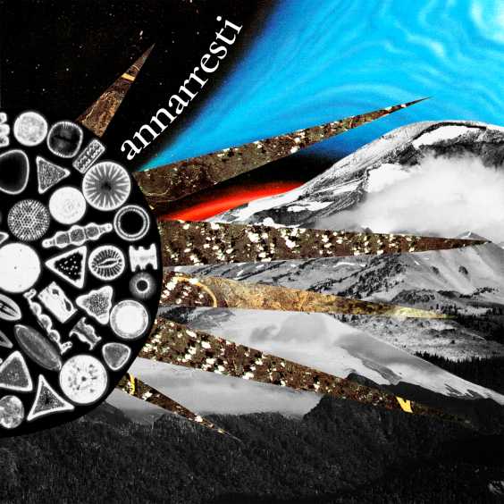

Alicia Paz

Haciendo música dialogo con el silencio, la paciencia y el asombro. Experimento con sonidos acústicos y electrónicos; con letras de mi autoría, robadas o prestadas.
No me olvido de mi raíz (que apunta al sur), mas el resto diverge en otras direcciones.
Soy bajista de formación y multi-instrumentista de oficio.
Puedes escuchar la música que hago en Bandcamp, Spotify o Youtube.
Soundcloud es mi repositorio de experimentos y demos caseros.